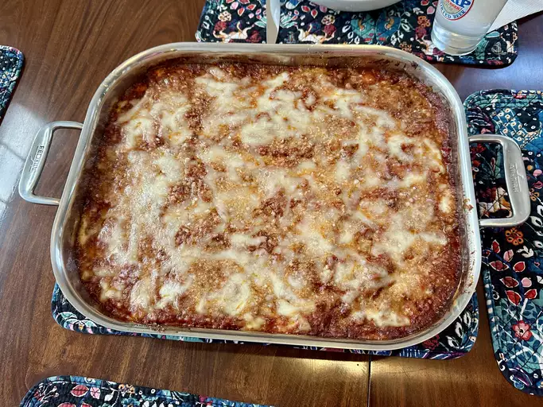

Home
Lasagna

Description
Lasagna is a dish that is composed of mainly meat, cheese,
sauce, and seasonings. Below you will find the ingredients
used to make the Worlds Best Lasagna as well as
the step by step instructions. This recipe was made famous
by John Chandler, he submitted this recipe to
ALLRECIPES
over 20 years ago. You can make alterations to fit your needs,
but we will be following John's recipe to a T!
Ingredients
- Meat: This super meaty lasagna has sweet
Italian sausage and lean ground beef.
- 1lb sweet Italian sausage and 3/4lb lean ground beef
- Onion and Garlic: An onion and two cloves
of garlic are cooked with the meat to add tons of flavor.
- 1/2 cup minced onion and 2 crushed garlic cloves
- Tomato products:To make up the sauce for this
lasagna we will use crushed tomatoes, tomato sauce, tomato paste,
and water.
- 1 can crushed tomatoes, 2 cans tomato sauce, 2
cans tomato paste, 1/2 cup of water
- Sugar:Sugar adds subtle sweetness and
enhance the flavor of the sauce.
- 2 Tablespoons of white sugar
- Spices and Seasonings:Fresh parsley, dried
basil leaves, salt, Italian seasoning, fennel seeds, and black
pepper
- 4 Tablespoons of parsley, 1 1/2 teaspoons of dried basil,
1 1/2 teaspoons of salt, 1 teaspoon of Italian seasoning, 1/2 teaspoons
of fennel seeds, 1/4 teaspoon ground pepper
- Lasagna noodles:Use store bought or homemade
lasagna noodles
- 12 lasagna noodles
- Cheeses:Parmesan, mozzarella, and ricotta
cheese make this lasagna extra decadent.
- 16oz ricotta cheese, 3/4lb sliced mozzarella cheese,
3/4 cup grated Parmesan cheese
- Egg:An egg helps bind the ricotta so it
doesn't ooze out of the lasagna when you cut into it.
- 1 egg